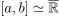
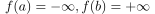

Homeomorphie eines abgeschlossenen Intervalls zu den erweiterten reellen Zahlen
1. Satz
Sei  mit
mit  , so ist das Abgeschlossenes Intervall
, so ist das Abgeschlossenes Intervall  homeomorph zu den erweiterten Reelle Zahlen
homeomorph zu den erweiterten Reelle Zahlen

1
2. Beweis
folgt aus der Homeomorphie eines offenen Intervalls zu den reellen Zahlen und der stetigen Erweiterung  (kleine fingerübung)